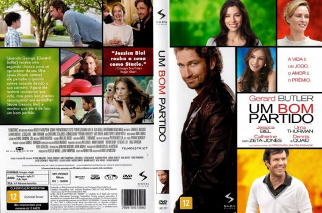

Um Bom Partido (2012)


This holiday season, what do you really want?

Avaliação (TMDb):


5.6/10 (612 votos)
Avaliação (Usuário):
Outro Título:Playing for Keeps
País:United States, 106 minutos
Idiomas falados:Inglês, Português
Gênero(s):Comédia, Romance
Diretor(s):Gabriele Muccino
Codec:MPEG-2 (DVD)
Número: 5318
Sinopse:
George é um ex-jogador de futebol que, na tentativa de se aproximar do filho, passa a treinar a equipe juvenil na qual ele joga. Só que ele não consegue se manter afastado das mães dos colegas de seu filho, a quem vive dando em cima.
Elenco:
Gerard Butler, Jessica Biel, Uma Thurman, Catherine Zeta-Jones, Iqbal Theba
Tipo de mídia: DVD R/RW,
Legendas: Inglês, Português, Sem Legendas
Alugado: Não
Tela: Anamorphic Widescreen